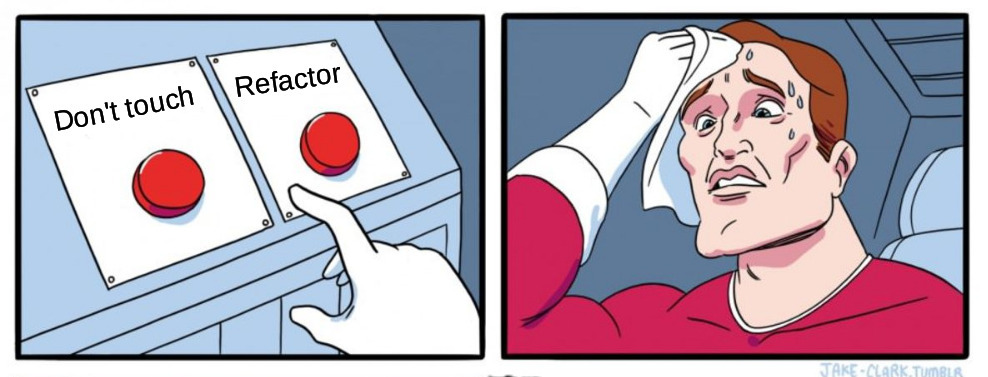
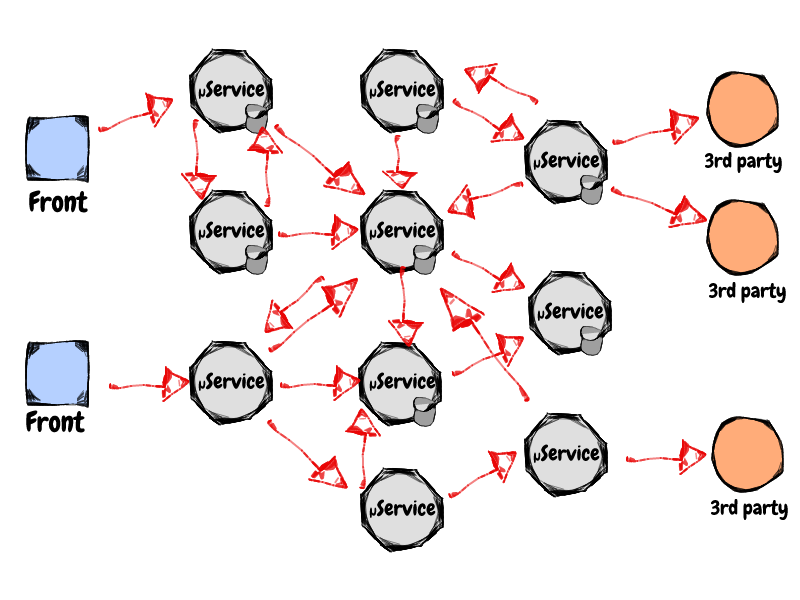
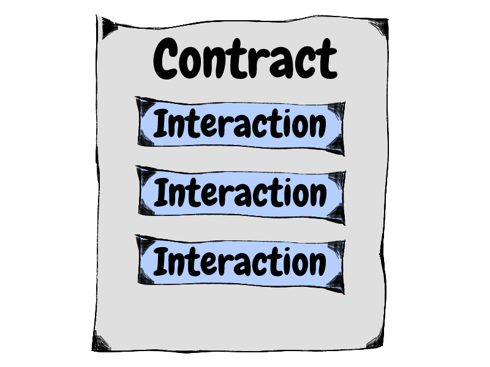
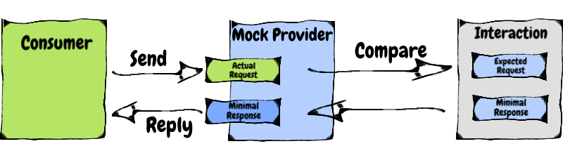

N’ayez plus peur
refactorer vos API WEB
Jessica
&
Maxime
#micro-services !!!

Notre architecture
New feature
Modifier une API
- Comment pas tout casser ?
- Combien ça va coûter ?

Ce serait génial si on savait
- Quels services communiquent entre eux ?
- Quels sont les formats d'échange ?
- Comment mesurer les impacts d'une évolution ?
- Comment valider une nouvelle version ?
En gros
D'habitude on test ça

Il nous manque ce petit bout

Autrement dit
Contract Testing !
Tester les interactions
Entre provider et consumer
Provider
C'est celui qui propose l'API
Exemple: Mon service REST
Consumer
C'est celui qui appelle l'API
Exemple: Mes clients Angular
Comment ?

On définit un contrat
Et des interactions

Test d'un provider
Test d'un consumer
Au global

Qui définit le contrat ?
Consumer driven VS Provider driven
provider Driven
Je fonctionne de cette manière
Consumer Driven
J'ai besoin de ça
provider Driven
- On ne connait pas les clients
Consumer Driven
- Voir les endpoints non/mal utilisés
- Identifier les consumers
C'est qui le plus fort ?
Quand faire du provider driven ?
- Pour tester une API Publique
- Vous ne connaissez pas vos clients
Quand faire du consumer driven ?
- Developpement orientés par le consumer
- Peu de consumers pour un même service
Polyglote
Pourquoi ?
- Open source
- Communauté active
- Bien documenté
- Polyglotte
Pact Broker
- Regroupe les Pacts
- Documentation
- Diagramme des microservices
Contract Testing vs E2E Test
Notre cas

Démo
Conclusion
| Do | Don't |
|
|